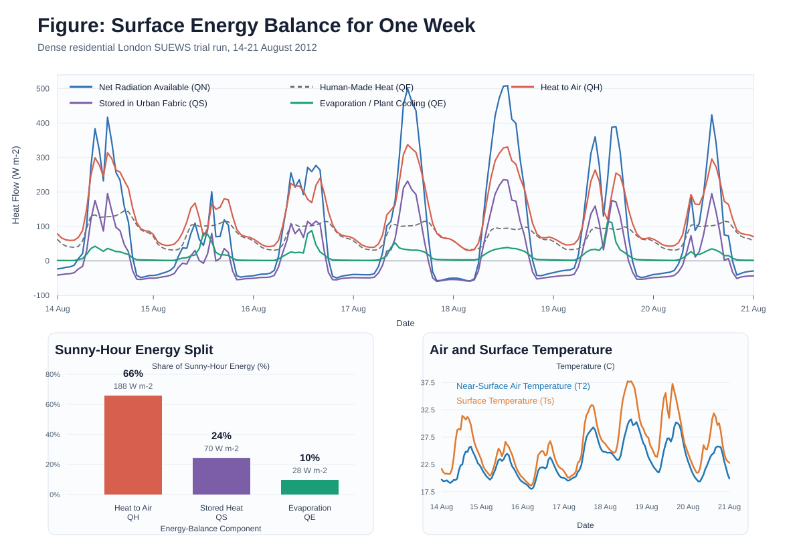

Urban Form
40% buildings at 12 m height, plus 35% paved streets, pavements, and car parks.
Which neighbourhoods in the focus city become most heat-risk exposed under a +3 C hotter-future stress test, and where do social vulnerabilities make that heat most dangerous?
This page rehearses the workflow for the SUEWS Community Hackathon: configure a neighbourhood, run SUEWS for a hot period, interpret the energy balance, and state exactly where the hazard-to-risk bridge is still incomplete.
The real focus-city data arrives on the hackathon day. This trial uses a simplified London neighbourhood so I can practise the full modelling and storytelling workflow before the judged event.
40% buildings at 12 m height, plus 35% paved streets, pavements, and car parks.
The remaining 25% is split into 15% street trees and 10% small gardens or grass.
The simulation uses bundled KCL London 2012 sample forcing, clipped to the hot week of 14-21 August 2012.
The repository keeps the configuration, provenance, diagnostics, output, figure, and this page together, so the trial run can be checked rather than taken on trust.
Started from the simple urban SUEWS template.
Changed land cover, building height, and roughness assumptions.
Validated the setup: zero validation errors and 168 hourly records.
During sunny hours, the model estimated roughly 285 W m-2 of available energy from net radiation plus human-made heat. Most of it heated the air or charged the urban fabric.
With 75% built or paved surface, vegetation cooling is present but not dominant.
| Quantity | Trial Result | Interpretation |
|---|---|---|
| Surface Temperature Peak | 37.7 C | Hard surfaces warm strongly during the hottest periods. |
| Near-Surface Air Temperature Peak | 30.7 C | Air heating is substantial but lower than surface heating. |
| Night-Time Storage Heat | Negative QS | Built and paved surfaces release stored heat after sunset. |
| Main Data Check | 0% missing QH/QE/QN | The plotted heat-flow outputs are complete. |

Figure: Surface Energy Balance for One Week. The top panel shows hourly heat flows through the hot week. The lower-left panel simplifies the sunny-hour energy split. The lower-right panel shows modelled air and surface temperatures.
The hackathon asks us to translate SUEWS heat hazard into a socio-economic heat-risk indicator drawn from the UN Office for Disaster Risk Reduction (UNDRR) metrics framework. This trial makes that bridge explicit.
SUEWS can estimate physical heat metrics: dangerous-heat hours, night-time heat retention, surface energy balance, and changes under +3 C forcing.
The vulnerability layer must come from the organiser-provided UNDRR-style indicators, not from invented variables in this London sample run.
The highest concern is where hotter-future hazard and social vulnerability overlap in the same neighbourhoods.
| Bridge Step | What It Means | Where It Can Break |
|---|---|---|
| Physical Heat Hazard | Use SUEWS outputs to compare neighbourhood heat exposure under baseline and +3 C stress-test weather. | SUEWS does not identify who is socially vulnerable; it models the urban climate. |
| UNDRR-Style Indicator | Use the provided socio-economic framework to represent exposure, vulnerability, and risk-relevant conditions. | I should follow the provided indicators exactly and avoid adding unsupported variables. |
| Heat-Risk Ranking | Rank neighbourhoods where physical heat and vulnerability overlap most strongly. | The final page must say whether each priority is driven by hazard, vulnerability, or both. |
Honest limitation: this trial does not include the focus-city dataset, the +3 C forcing, or the UNDRR-style vulnerability indicator. It is a workflow rehearsal and a forum-ready request for feedback on how to make the hazard-to-risk bridge credible.
I mapped the trial page to the hackathon criteria so the final version can be built deliberately rather than rushed.
Reproducible SUEWS run, changed land cover, stated assumptions, validation checks, figure, and citation.
Final version needs focus-city data, all neighbourhoods, and expert review of warnings.
Separates physical heat hazard from social vulnerability and names the UNDRR-style bridge.
Final version needs the provided risk indicator and a clear account of where it holds or breaks.
This page is structured as a transparent forum post with caveats and questions for feedback.
Final version should reflect community feedback and cite what changed because of it.
The page has one question, short method, headline result, figure, caveats, and next step.
Final version needs a ranked focus-city result visible early on the page.
The assistant helped configure, run, diagnose, visualise, and translate SUEWS results.
Final version should export the transcript and preserve prompts, checks, failures, corrections, and decisions.
For the judged version, I should treat the assistant as a modelling partner that must show its working, not just a page-writing tool.
Before running anything: list what is known, what is assumed, and which assumptions need expert confirmation.
Run baseline and hotter-future cases together, then ask for the difference, not just the raw outputs.
Ask for validation, missing-data checks, energy-balance checks, and a plain-language explanation of every warning.
This trial uses SUEWS/SuPy 2026.6.5. The final submission should cite the current software release and the core SUEWS papers.
| Jarvi et al. (2011) | The Surface Urban Energy and Water Balance Scheme (SUEWS): Evaluation in Los Angeles and Vancouver. Journal of Hydrology, 411(3-4), 219-237. |
| Ward et al. (2016) | Surface Urban Energy and Water Balance Scheme (SUEWS): Development and evaluation at two UK sites. Urban Climate, 18, 1-32. |